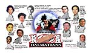
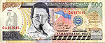

|
Viewpoint
Erap's
Legacy to the Filipino People
by
Joie B. Alvarez
Erap's parting
words: "Mga kababayan, wala na akong kamaganak, wala na akong
kaibigan, wala na akong kumpare. Bakit ninyo ako sinubukan?"
And you thought the erap brouhahas
are over? Well, this article might be the last round up on
the topic as far as the ITCorkboard is concerned. We witnessed
how the Filipino people were all taken aback by the recent
events that eventually toppled another wealth-thirsty president
the poverty-stricken Philippines couldn't afford to have.
The series of "Jueteng-gate" hearings was one melodrama closely
followed by all levels of Philippine society, a record-breaker
indeed, ousting Marimar and Rosalinda!
The so-called
"champion of the poor" was at the very start doubted if he
will be able to judiciously carry out the functions of the
highest office of the land, yet to him the benefit of the
doubt was given. But starting mid-1999, several accusations
have been hurled to the administration as well as the members
of the first family; these I guess started to give the public
a clearer pen to trace more vividly the true picture of Joseph
Estrada. Among the allegations were Jude Estrada's non-paying
of P60,000 hotel bills, anomalous fire truck bidding, inappropriation
of Philippine Charity Sweepstakes funds, BW Scandal, and of
course, the pivotal story was that of the Jueteng scandal
as foretold by Chavit Singson. And to the dismay of Asiong
Salonga, "Jueteng-gate" was even made colorful by the PCIJ
reports on his mansions and the extravagant lifestyles of
his mistresses - very much in contrast with the plight of
the Filipino masses he claims he is in support of. What more
can be so disgustingly irritating than to watch before your
eyes the contrasting and unfavorable movement of oil price
and peso against the dollar, and in the backdrop is "Erap
in Action" - amassing his financial resources at the expense
of the laboring Filipinos.
|
|
(Click
image for a larger view)
|
|  |
|
(Click
image for a larger view)
|
|  |
| (Click
image for a larger view) |
The sojourn of a multi-billion
business called "The Erap Government" has finally come through
the People Power 2. But Erap did not step down without leaving
a legacy that would make us laugh, cry, and blue in anger,
for the man he proved to be.
- Edsa
Scenes
This one's really worth another look. not only because of
its social significance but also because the DLSU community
was part of this momentous and heroic event. And not to
be outdone, a number of ITPs also trooped to the shrine
to heed the call of Edsa and to show their indignation towards
the Erap administration.
- Joe's
Cohorts
Filipinos cannot just let them get away with it. with the
misjudgment they've committed, they truly deserve our resentment.
But instead of having them give us a dose of hypertension,
why don't we just give them a big round of insulting laugh!
- Edsa
II Laughs and Classic Eraptions
Here are some comic strips and I bet, even after Erap, the
Classic Eraptions will always be around the corner.
- Erap's
Secret Diary
Selected entries from Erap's Secret Diary!!! A
must read!
- Anti-Erap
Sites
At the height of the impeachment trial, several anti-Erap
web sites mushroomed to extend to the cyberspace a display
of protest against the Erap government.
- Some
Publication
|